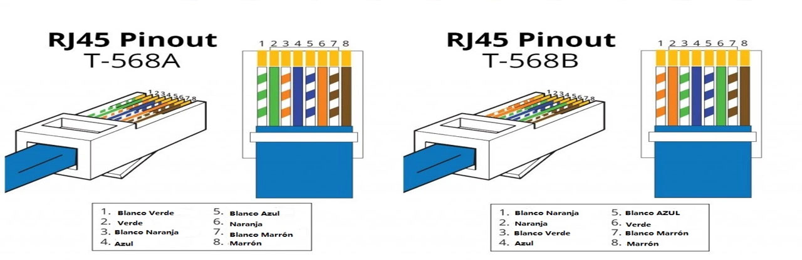

Estándares de cable de red RJ45

Los estándares de cableado T568A y T568B
Como sabemos, los cables de red se componen de cuatro pares de cables, cada uno de los cuales consta de un cable de color sólido y una franja del mismo color. Para la red Ethernet 10/100BASE-T, solo se utilizan dos pares de cables (naranja y verde). Los otros dos pares de cables (de color marrón y azul) se utilizan para otra aplicación de red Ethernet o para conexiones telefónicas. La utilización de un cable directo o cruzado dependerá del tipo de conexión que se necesite. Para normalizar la disposición de cables, se utilizan dos estándares, el T568A y T568B, los cuales proporcionan esquemas de cableado para la terminación de los cables de red en enchufes, así como enchufes RJ45 de ocho posiciones.

T568A vs T568B
Como se muestra en la imagen, la principal diferencia entre estos dos estándares es la posición de los pares de cables naranja y verde, lo cual no es solo un cambio de código de color, por supuesto. También habrá factores de compatibilidad, lo cual deberá influenciar en su decisión de un esquema de cables RJ45.
Cable de RED Directo
Un cable de red directo es un tipo de cable de par trenzado que se usa en las redes de área local para conectar un ordenador a un núcleo de red como por ejemplo un enrutador. Este tipo de cable también se conoce como cable de conexión y es una alternativa a las conexiones inalámbricas donde uno o más ordenadores acceden a un enrutador a través de una señal inalámbrica. En un cable directo, los colores de cada par de cable coinciden. Para el cable de red directo se aplica solo un estándar de cableado:ambos extremos del cable deben tener la misma dirección: T568A a T568A o T568B a T568B.
Cable de RED Cruzado
Un cable de red cruzado es un tipo de cable Ethernet que se utiliza para conectar dispositivos de computación directamente. A diferencia de los cables de red directo, los cables cruzados utilizan dos estándares de cableado diferentes: un extremo usa el estándar de cableado T568A y el otro utiliza el estándar de cableado T568B (T568A a T568B). El cableado interno de los cables de red cruzados invierte las señales de transmisión y recepción. Este tipo de cable se usa con más frecuencia para conectar dos dispositivos del mismo tipo: por ejemplo, dos ordenadores (a través del controlador de interfaz de red) o dos switches entre sí.
Conclusión
Los cables de red directos y los cables de red cruzados se conectan de forma diferente entre sí. Si quiere saber qué tipo de cables tiene, mire el orden de los cables de color dentro del conector RJ45. Si el orden de los cables es el mismo en ambos extremos, entonces tiene un cable directo. Si no es así, lo más probable es que sea un cable cruzado o que esté mal conectado. En la actualidad, el cable directo es mucho más popular que el cable cruzado.